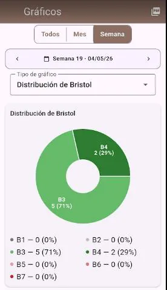
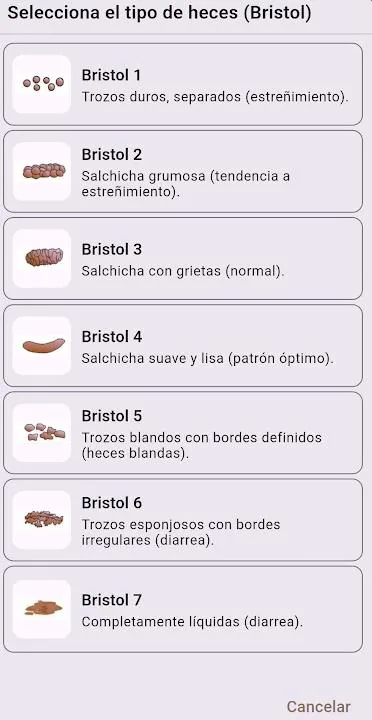
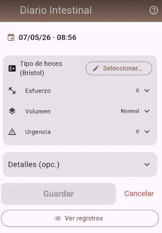
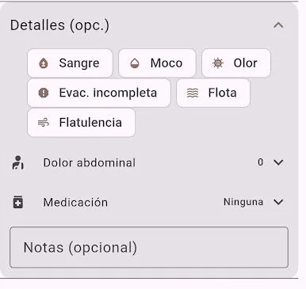
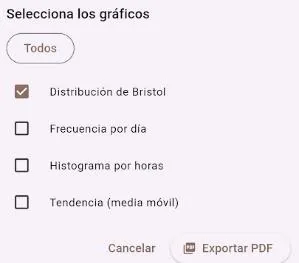
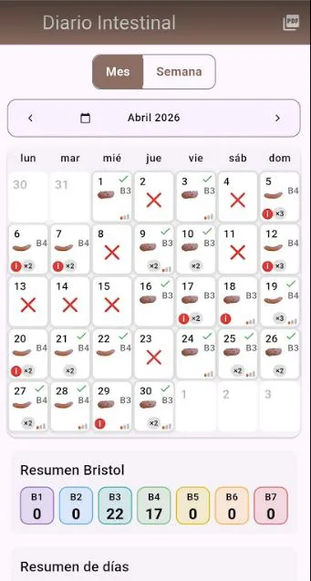

Mòdul Femtes
Manual Diari Intestinal
Guia pràctica per registrar la funció intestinal i revisar-ne l’evolució.

Objectiu
El diari intestinal permet registrar patrons i símptomes relacionats amb la salut digestiva. Aquesta informació pot ajudar els professionals sanitaris a valorar freqüència, consistència, urgència, molèsties, possible impacte de medicaments, estrès o alimentació.
Com fer un registre
1. Selecciona el tipus de femta
Prem el selector del tipus de femta. S’obrirà la classificació de Bristol perquè puguis triar el tipus que més s’hi assembli.

2. Escala de Bristol
L’escala de Bristol classifica la femta del tipus 1 al 7. Els tipus 3 i 4 acostumen a considerar-se normals; el tipus 1 indica restrenyiment i el tipus 7 diarrea.

3. Afegeix detalls només si cal
Si notes alguna cosa irregular, desplega l’apartat de detalls. Podràs indicar sang, moc, olor, evacuació incompleta, flotació, flatulència, dolor abdominal, medicació o notes.
4. Esforç, volum i urgència
També pots informar l’esforç, el volum i la urgència. Aquestes dades ajuden a detectar patrons, però no cal omplir-les sempre si el registre és normal.
Gràfics

Visualitza l’evolució
A la pantalla de gràfics pots consultar el total, els mesos o les setmanes i escollir el tipus de gràfic que vols veure.

Exporta els gràfics
En prémer la icona PDF, pots seleccionar quins gràfics vols incloure a l’informe abans d’exportar-lo.
Informes

Resum d’un cop d’ull
La pantalla d’informes permet veure l’evolució setmanal o mensual de manera ràpida i gràfica.
Al final de la pàgina es mostra el recompte d’incidències o detalls registrats.